Ray Tracer
Primitives
CSG
Texture Mapping
Reflection
Glossy Reflection
Refraction
Glossy Refraction
Soft Shadow
Depth of Field
Motion Blur
Ray Tracer
Yao Huang
CS 488 class 2017 Summer
Primitives
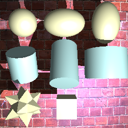
Three primitives are supported:
sphere, cylinder and mesh.
The example image on the left shows the primitives and how they look like after various transformation
Constructive Solid Geometry
CSG is implemented supporting:
union, intersect and subtract
The example image on the right shows the result of perfoming CSG actions on two spheres
first row: union
second row: intersect
third row: subtract
note: CSG is not supported for mesh
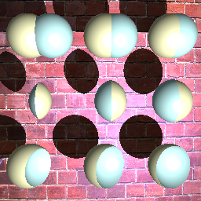
Texture Mapping
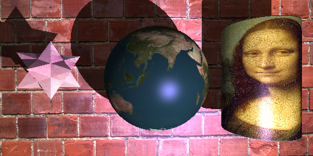
Texture mapping is implemented supporting all primitives:
the result of applying texture mapping is shown on the left
Reflection
Reflection is supported by controlling reflection rate (between 0 and 1)
In the case of secondary hitting nothing, color black is applied
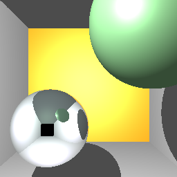
Glossy Reflection
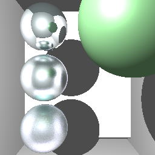
Glossy reflection is supported by controlling how diffuse level (between 0 and 1)
On the example image shown on the left, the top sphere has diffuse level 0. Diffuse index grows from top to bottom.
Refraction
Refraction is supported by controlling reflection rate (between 0 and 1)
In the case of secondary hitting nothing, color black is applied
The picture on the left simulates water.
The one on the right simulates glass.
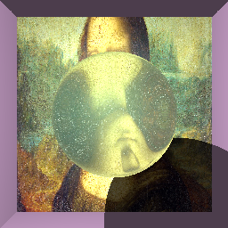 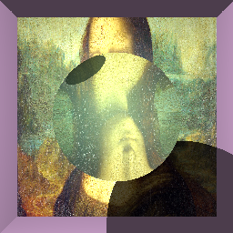
Glossy Refraction
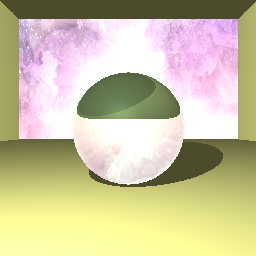 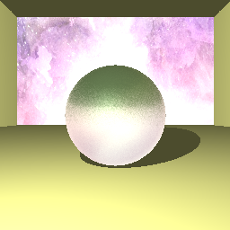
Glossy refraction is supported by controlling how diffuse level (between 0 and 1)
The example image on the left has diffuse level 0
The one on the right has diffuse level 0.2
Soft Shadow
Soft Shadow is implemented by jittering lightRay when deciding if light source is blocked with a certain number of samples.
The one on the left has no soft shadow.
The one on the right has soft shadow.
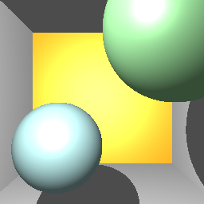 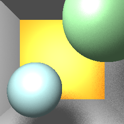
Depth of Field
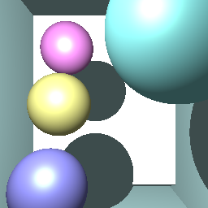 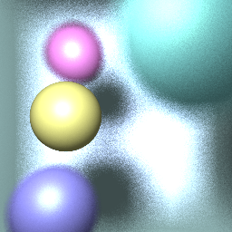
Depth of Field is supported by controlling dispersion and focus point.
Motion Blur
Motion Blur is supported by controlling the motion direction and speed(px/second) for geometries.
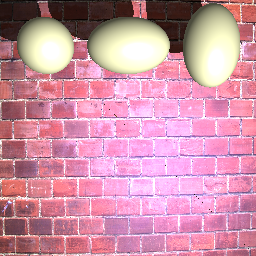 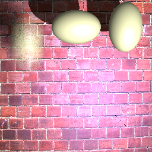